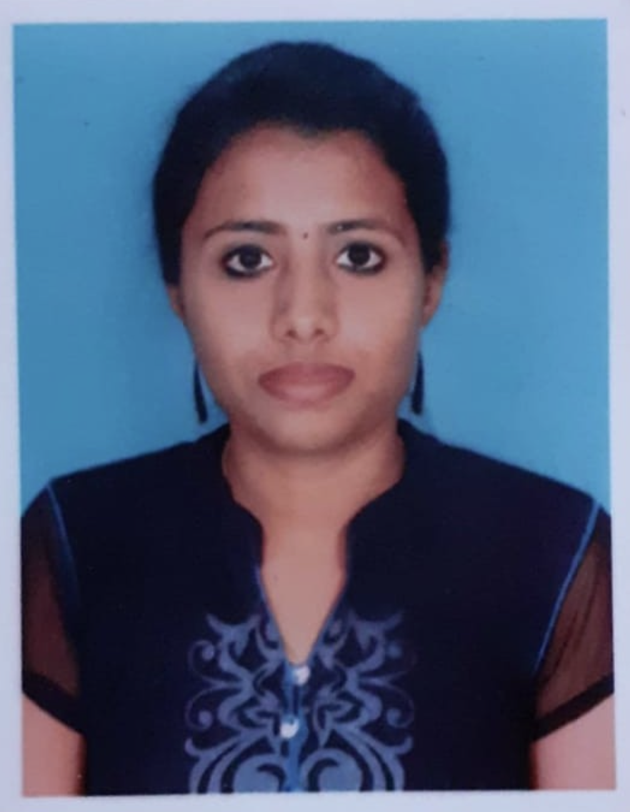

M. R. Sri Valli

Summary
Aspiring Web Developer. Passionate About Creating Intuitive and Dynamic Web Experiences
Eager to learn and
Education
Masters of Science in Microbiology - B.S.Abdur Rahman Cresent Institute of Science and Technology, Vandalur, Tamil Nadu.
Graduated: 2020Bachelor of Science in Microbiolog - SRM Arts and Science College, Potheri, Tamil Nadu. Graduated: 2018
Work Experience
Integra Software Solutions PVT Ltd.,
- Editorial Assistant
(04/2022 - 03/2024)
Coordinated the peer-review process for manuscript submissions,
ensuring efficient communication between authors, reviewers, and
editors
Complete all assigned tasks during scheduled hours and meet
productivity expectations.
Acted as a liaison between the author and the editor, facilitating
the smooth flow of information and ensuring timely publication of
each issue.
Azidus Laboratories
- Bio Analyst (2020 - 2021)
Conducted various analytical tests and experiments to analyze
biological samples.
By using the samples, generated data for research or diagnostic
purposes.
Skills
HTML
CSS
JavaScript
Responsive designs
Excellent communication
Excel
Projects
Web Develpment
HTML, CSS, JavaScript
Designed and developed a YouTube clone using HTML and
CSS.
Structured the page to include a header, navigation menu,
video thumbnails, and a footer.
Styled a page to closely resemble the official YouTube layout
closely, ensuring a clean and user-friendly design.
Implemented responsive design principles to ensure the
page looks great on desktop and mobile devices.
Developed a responsive e-commerce website using HTML,
CSS, and JavaScript.
Implemented product listing pages, and cart functionality.
Developed a classic Rock Paper Scissors game using HTML,
CSS and Javascript.
Implemented interactive gameplay with JavaScript for user
interaction.
Designed a responsive layout ensuring compatibility across
different devices and screen sizes.
Developed Love Guru app with responsive design.
Others
My Hobbies Contact Me